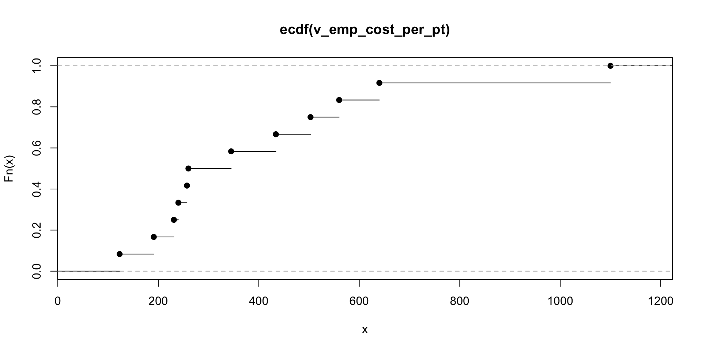
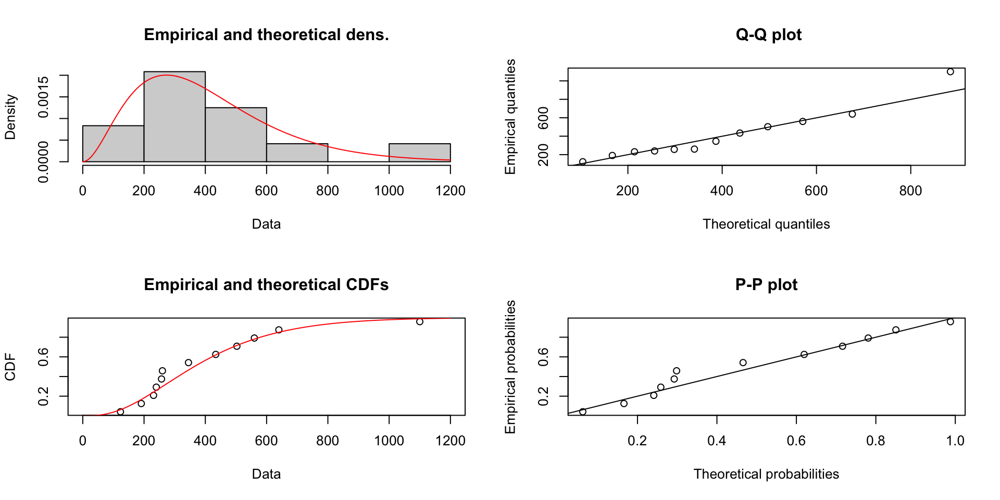
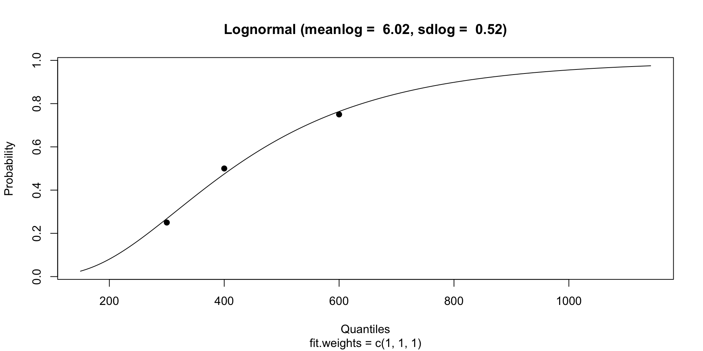
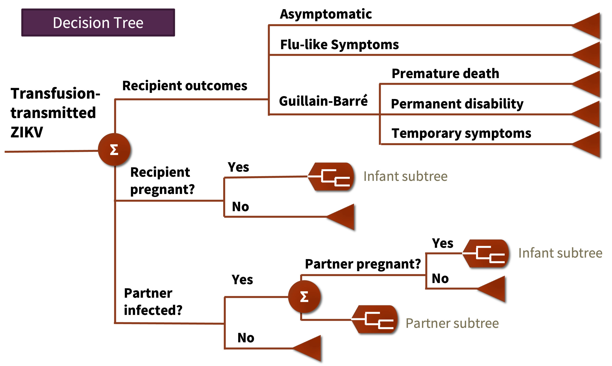

Microsimulation 1
EPIB 676 session 7, McGill University
1/25/23
R packages
Today
Basics
Sampling values
Simulating decision trees
Simulating state transition models
State explosion: a limit of cohort models
To add heterogeneity in cohort model
Add states
Make new version of model
Can quickly become unwieldy:
8 heath states, 2 genders, 4 racial groups, 8 age groups = 512 states!
Advantage of microsimulation models
Explicitly model individuals (not just cohorts)
Capture individual (patient) variation
Model accurate and diverse pathways
History can impact future events
- No Markov assumption
Monte Carlo simulation
Use repeated sampling of random numbers to estimate quantity. Used in risk analysis, physics, estimating integral, etc.
General process
Identify inputs and assign distributions
For several (1000’s of) repetitions:
Draw a value for each input
Compute outcome
Aggregate results

Patient level Monte Carlo simulation
Identify inputs and assign distributions
Patient characteristics
Risks, costs, health impact of uncertain events
Impact of health intervention on risks/costs/health impacts
For 1000’s of repetitions:
Generate a patient
Simulate outcomes under >1 strategy
Aggregate to estimate relative population impact
Microsimulation defined
Simulates individuals (usually patients)
Tracks characteristics and health outcomes
No interactions between individuals
- Contagion \(\rightarrow\) agent based simulation
- Capacity/queues \(\rightarrow\) discrete event simulation
Some use different terminology and consider agent base or discrete event models subsets of microsimulations
“Memory” in a microsimulation
Risks, costs, and health impacts can depend on
Patient baseline characteristics
Simulation time (or patient age)
Patient’s path up until that point
Think conditional probabilities or conditional distributions
Variation: microsim vs. cohort
Cohort model
Within health state population is homogeneous
Parameters reflect population averages
Microsimulation
Parameterization can reflect individual-level variation
“X% of patients would have costs over $Y” or “adverse event would occur in X% of patients from Y subgroup”
Microsims only capture full variability if parameterized to do so
Downside: complexity and compute
Flexibility/functionality comes with complexity
Harder to program and parameterize
Long runtime, particularly with rare events and without code optimization
Strategy: get a minimally viable model working, add complexity where warranted
Key microsimulation components
Vector of individual variables
Baseline characteristics (age, sex, race, initial cancer stage, CD4 count, etc.)
History-tracking variables (costs, QALYs, infections, recurrences, transfusions, etc.)
Model parameters: probabilities, distributions over outcomes
Model: function that generates individuals and applies parameters to calculate outcomes
Today
Basics
Sampling in microsimulation
Simulating decision trees
Simulating cohort state transitions
Two levels of uncertainty
Stochasticity: individual variation in outcomes due to random chance
Parametric uncertainty: about a population parameter
Example:
Risk of getting cancer \(\rightarrow\) parametric uncertainty
Whether I get cancer \(\rightarrow\) stochasticity
Microsimulations model stochasticity. Parametric uncertainty assessed through sensitivity analysis (planned for session 10)
Bayesian analog
Posterior distribution describes parameteric uncertainty. Sampling distribution describes stochasticity.

Two options for sampling
Sampling from distribution
Sampling from dataset directly
Sampling binary outcome
Parameter: probability of one outcome
Sampling discrete multiclass outcome
Input: probability for each outcome (or all but one outcome)
race_dist <- c(0.1, 0.05, 0.2, 0.15, 0.4)
names(race_dist) <- c("black", "indigenous", "latino","other", "white")
#Use sample function
v_race = sample(x=names(race_dist), size=100, prob=race_dist, replace=T)
# Number simulants in each race category
table(v_race)v_race
black indigenous latino other white
9 6 30 12 43 v_race
black indigenous latino other white
0.09 0.06 0.30 0.12 0.43 Sampling from empirical dist’n
Equivalent to directly sampling from data
Fitting distribution to data
fitdistrplus package accepts these distributions: “norm”, “lnorm”, “pois”, “exp”, “gamma”, “nbinom”, “geom”, “beta”, “unif” and “logis”
Fitting of the distribution ' gamma ' by maximum likelihood
Parameters :
estimate Std. Error
shape 3.041747251 1.107602554
rate 0.007473085 0.002904396
Loglikelihood: -81.03049 AIC: 166.061 BIC: 167.0308
Correlation matrix:
shape rate
shape 1.0000000 0.9084043
rate 0.9084043 1.0000000Fitting distribution to data
Fitting distribution to quantiles
Can also fit distribution to summary statistics reported in literature such as quantiles
Correlated parameters
Probabilities, costs, health outcomes can correlate with each other and depend on baseline characteristics or history
Can fit a separate distribution for each subgroup
\(P(X \mid \text{age, sex, number of remissions})\)
\(Cost(Y \mid \text{recurrences, age})\)
Iterative proportional fitting (Husby et. al. 2018)
Copulas (Jeong et al 2015)
Parameter calibration (planned fo session 12)
Sample directly or fit distribution?
Reasons to sample directly
No assumptions
Sampling >1 variable for each individual maintains correlation without fancy modeling
Reasons to fit distribution (even if you have data)
Small or biased samples may not include full variability of target population
Don’t need to load data into memory to run model (efficient)
Others can run your model even if data cannot be shared
Today
Basics
Sampling values
Simulating decision trees
Simulating state transition models
When to simulate decision tree?
Some probabilities, costs, or outcomes depend on baseline characteristics
You want to model individual-level variability
Basic procedure
Generate individuals with baseline characteristics
- Sample from dataset or some joint distribution approximation
Calculate individual’s probabilities, costs, outcomes, some of which depend on baseline characteristics
Compute tree for that individual and store outcome
Aggregate
Use case: transfusion-transmitted infections
Transfused patients receive combo of red blood cells, platelets, and plasma
Infection risk can vary by product
More units transfused = more exposure risk
Baseline characteristics
Data table derived from Swedish and Danish blood donors with number of red blood cells (RBC), platelet (PLT) and plasma (FFP) units transfused, 5-year age group, and sex.
t_cohort <- read.csv2("transfusion_cohort.csv", sep=" ")
n_cohort <- nrow(t_cohort) #number of rows
n_cohort[1] 80000idx_sample <- sample(1:n_cohort, 8) #randomly sample 6 donors
t_simulants <- t_cohort[idx_sample,]; t_simulants units_rbc units_plt units_ffp age_group is_female
6772 8 0 0 75 1
17311 6 0 2 75 1
65387 5 0 0 60 0
15931 1 0 0 85 0
56746 2 0 0 65 0
61886 2 0 0 85 1
15043 2 0 0 60 0
54620 3 0 0 70 0Calculating probability of infection
prev = 0.08 # 8 in 100 donations infected
p_transmit_by_prod <- c(0.5, 0.5, 0.7) # Transmissibility by product
names(p_transmit_by_prod) <- c("RBC","PLT","FFP")
#function for individual risk of transmission
get_p_transmit <- function(prev, p_transmit_by_prod,
units_rbc, units_plt, units_ffp){
p_neg_unit = 1 - prev
return(
1 - (
(1-p_transmit_by_prod['RBC']*(1-p_neg_unit^units_rbc))*
(1-p_transmit_by_prod['PLT']*(1-p_neg_unit^units_plt))*
(1-p_transmit_by_prod['FFP']*(1-p_neg_unit^units_ffp))
))}Simulating infection
#Calculate probability of transmission for each recipient
t_simulants <- t_simulants |>
mutate(p_transmit = get_p_transmit(prev, p_transmit_by_prod,
units_rbc, units_plt, units_ffp))
#Simulate whether infection occured
v_rand <- runif(n=nrow(t_simulants)) #vector of random numbers
t_simulants |>
mutate(infected = v_rand < p_transmit) units_rbc units_plt units_ffp age_group is_female p_transmit infected
6772 8 0 0 75 1 0.2433906 TRUE
17311 6 0 2 75 1 0.2831801 TRUE
65387 5 0 0 60 0 0.1704592 FALSE
15931 1 0 0 85 0 0.0400000 FALSE
56746 2 0 0 65 0 0.0768000 FALSE
61886 2 0 0 85 1 0.0768000 FALSE
15043 2 0 0 60 0 0.0768000 FALSE
54620 3 0 0 70 0 0.1106560 FALSETT-Zika parameters depend on age, sex, component mix
Today
Basics
Sampling values
Simulating decision trees
Simulating state transition models
Why simulate a state transition model?
Enables flexibility without state state explosion
Transitions, costs, health outcomes can depend on complex functions of
Simulation time
Time in health state
Prior health states
Baseline characteristics
Tracking individuals
For each variable, use \(n_i \times n_t\) matrix where \(n_i\) is the number of individuals and \(n_t\) is the number of cycles.
Typically:
\(M_m[i,t]\) matrix gives state of individual \(i\) during cycle \(t\)
\(M_c[i,t]\) matrix gives costs accrued by individual \(i\) during cycle \(t\)
\(M_e[i,t]\) matrix gives the health accrued accumulated by individual \(i\) during cycle \(t\)
Can add more
Sick-sicker model (Krijkamp et. al. 2018)
Open up sicksicker_microsim_B.R on your laptop. We will walk through it together
Recap
Microsimulations model individual patients’ pathways and allow for complex relationships between variables
Can be parameterized to estimate variability of outcomes in population
While flexible, can be complex to parameterize and slow to compute
Logistics
We are halfway through “methods” phase of course. Great work so far!
- Assignment 2 due 11:59 Friday, Jan 27
- Assignment 3 to be posted tomorrow, due Friday, Feb 3
- Office hours in conference room #1103 (11th floor near kitchen)
- Added info for non-programming assignments in ‘syllabus’ folder